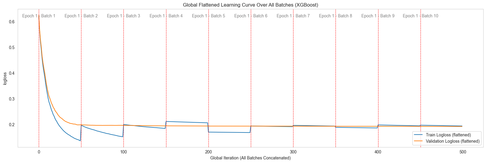
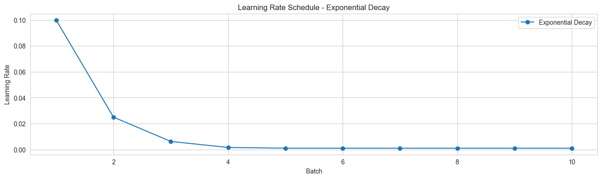
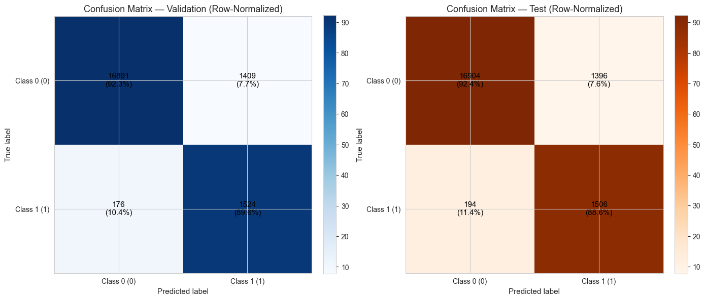
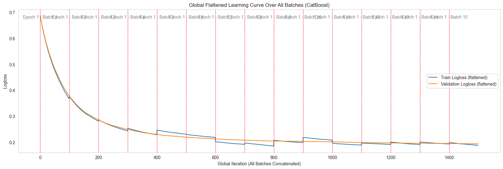
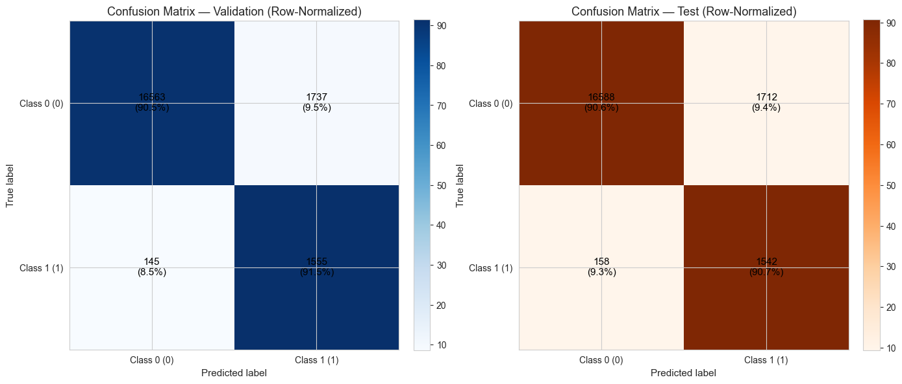
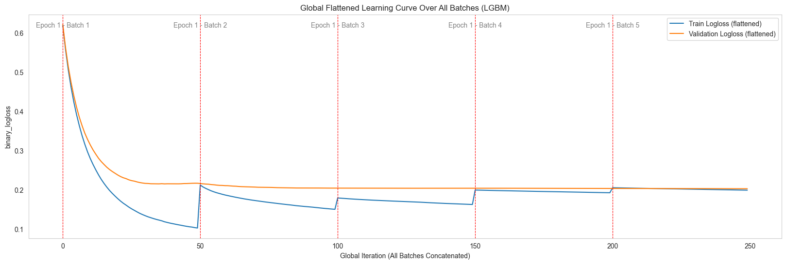
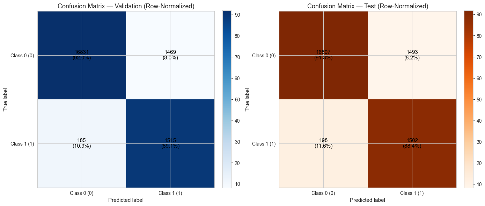

Binary Classification
This page demonstrates the use of Spark Batch Trainer for a binary classification problem, using the Dataset (Diabetes Dataset).
📌 Goal: Predict whether a patient has diabetes based on medical data.
Note
Data preparation (loading, splitting into train/validation/test, converting to Spark DataFrames) is already described in detail in the Dataset section.
In the examples below, we assume that spark_train_df and spark_valid_df are already available and ready to use.
—
1. XGBoost Example
Summary: This example shows how to train an XGBoost model with batch-wise training and an exponential decay learning rate. XGBoost is one of the most widely used boosting algorithms for tabular data.
from spark_batch_trainer.trainers.xgboost_trainer import XGBoostTrainer
# 1. Instantiate trainer
trainer = XGBoostTrainer()
target_column = "diabetes"
# 2. Define model configuration
config_model = {
"objective": "binary:logistic",
"eval_metric": "logloss",
"n_estimators": 50,
"learning_rate": 0.05,
"max_depth": 6,
"reg_lambda": 3.0,
"subsample": 0.8,
"colsample_bytree": 0.8,
"random_state": 42,
"early_stopping_rounds": 50,
}
# 3. Set learning rate scheduler
config_lr_scheduler = {
"initial_lr": 0.1,
"decay_rate": 0.25,
"min_lr": 1e-3,
}
# 4. Configure batch-wise training
config_training = {
"num_batches": 10,
"max_patience": 2,
"show_learning_curve": True,
"use_sample_weight": True,
}
# 5. Fit and evaluate
trainer.fit(
train_dataframe=spark_train_df,
valid_dataframe=spark_valid_df,
target_column=target_column,
config_training=config_training,
config_model=config_model,
config_lr_scheduler=config_lr_scheduler,
)
# 6. Retrieve trained model
trained_model = trainer.get_trained_model()
Visual Results (XGBoost)
Learning curve: shows training vs validation loss convergence
Learning rate schedule: exponential decay applied during training
Confusion matrix: prediction accuracy on validation and test sets
{kind=link}

{kind=link}

{kind=link}

—
2. CatBoost Example
Summary: This example shows how to train a CatBoost model with batch-wise training. CatBoost is particularly effective for datasets with categorical features and handles class imbalance natively.
from spark_batch_trainer.trainers.catboost_trainer import CatBoostTrainer
# 1. Instantiate trainer
trainer = CatBoostTrainer()
target_column = "diabetes"
# 2. Define model configuration
config_model = {
"loss_function": "Logloss",
"eval_metric": "Logloss",
"iterations": 100,
"learning_rate": 0.01,
"depth": 6,
"l2_leaf_reg": 3.0,
"auto_class_weights": "Balanced",
"bootstrap_type": "Bernoulli",
"subsample": 0.8,
"random_seed": 42,
"verbose": False,
}
# 3. Configure batch-wise training
config_training = {
"num_batches": 15,
"max_patience": 3,
"show_learning_curve": True,
}
# 4. Fit and evaluate
trainer.fit(
train_dataframe=spark_train_df,
valid_dataframe=spark_valid_df,
target_column=target_column,
config_training=config_training,
config_model=config_model,
)
# 5. Retrieve trained model
trained_model = trainer.get_trained_model()
Visual Results (CatBoost)
Learning curve: shows training vs validation logloss
Confusion matrix: classification results on validation/test sets
{kind=link}

{kind=link}

—
3. LightGBM Example
Summary: This example shows how to train a LightGBM model with batch-wise training and exponential decay learning rate scheduling. LightGBM is optimized for speed and memory efficiency, making it suitable for large-scale datasets.
from spark_batch_trainer.trainers.lightgbm_trainer import LGBMTrainer
# 1. Instantiate trainer
trainer = LGBMTrainer()
target_column = "diabetes"
# 2. Define model configuration
config_model = {
"objective": "binary",
"n_estimators": 50,
"num_leaves": 30,
"random_state": 42,
"force_col_wise": True,
}
# 3. Set learning rate scheduler
config_lr_scheduler = {
"initial_lr": 0.1,
"decay_rate": 0.25,
"min_lr": 1e-3,
}
# 4. Configure batch-wise training
config_training = {
"num_batches": 5,
"max_patience": 2,
"eval_metric": "binary_logloss",
"show_learning_curve": True,
"use_sample_weight": True,
}
# 5. Fit and evaluate
trainer.fit(
train_dataframe=spark_train_df,
valid_dataframe=spark_valid_df,
target_column=target_column,
config_training=config_training,
config_model=config_model,
config_lr_scheduler=config_lr_scheduler,
)
# 6. Retrieve trained model
trained_model = trainer.get_trained_model()
Visual Results (LightGBM)
Learning curve: training vs validation logloss
Learning rate schedule: exponential decay applied
Confusion matrix: validation/test classification performance
{kind=link}


{kind=link}

—
Key Takeaways
Spark Batch Trainer supports binary classification with XGBoost, CatBoost, and LightGBM.
Batch-wise training allows global early stopping and progress monitoring.
Learning rate scheduling (e.g., exponential decay) improves training stability.
Each framework has its strengths:
XGBoost: versatile, widely adopted.
CatBoost: efficient with categorical data, handles imbalance well.
LightGBM: fast and memory-efficient, ideal for large datasets.